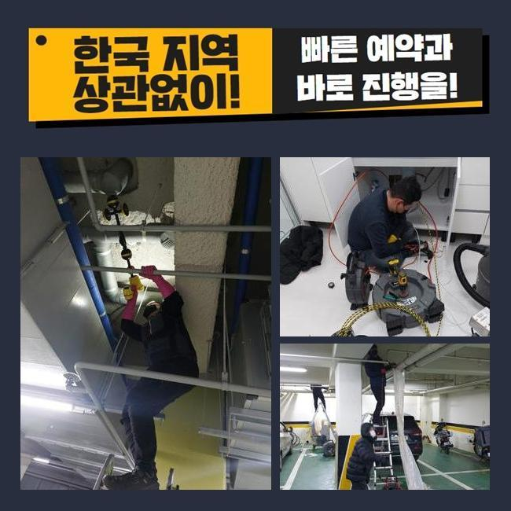
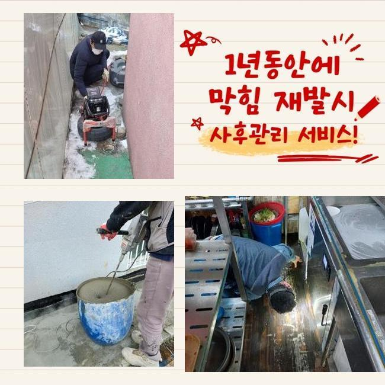
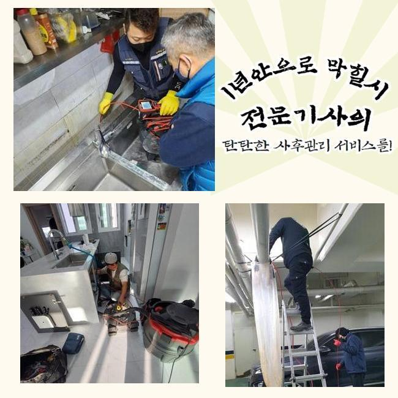
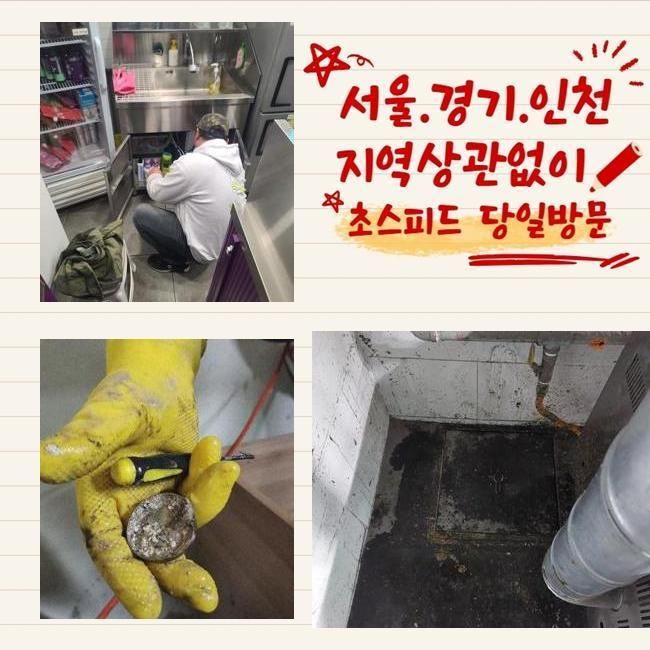
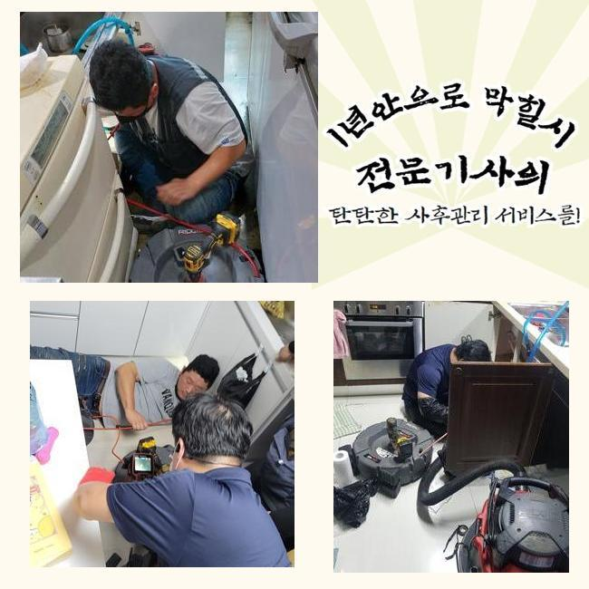
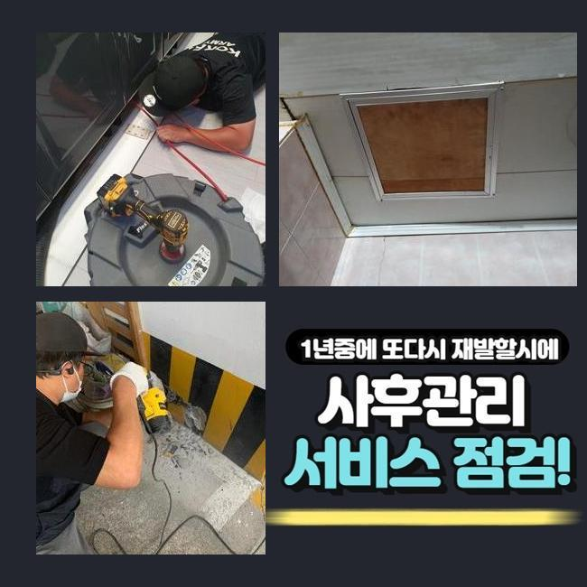

🏠 중구 을지로욕실역류 인현동2가 맨홀역류 누수
용인 하수구막힘 전문 시공 후기

📋 작업 개요
- 위치: 용인
- 서비스 유형: 하수구막힘, 배관막힘, 맨홀막힘, 집수정막힘, 누수수리, 역류해결, 배관청소, 설비공사
- 작업 일시: 2024. 12. 21. 13:55
- 업체명: 하수구수사대 (010-5615-2118)
🔍 문제 상황
중구 을지로욕실역류 인현동2가 맨홀역류 누수
공동 주택 내부에 설치 되어있는 하수시설을 관리하지 않는 경우 노폐물이 층을 이루면서 하수라인의 역류문제가 발생할 일들이 많아집니다
현재 사용하시는 하수설비의 사용년수가 오래 되셨다면 전문업체에 의뢰하셔서 하수구의 상태를 확인하시는 것을 추천합니다
이번에 출동한 현장은 의뢰인분께서 배수구가 막혔다고 긴급하게 전화주셨어요
출동해보니 약간 외딴 지역의 다세대주택으로 주변에는 캠핑업체가 영업을 하고있는 상태로 보였습니다
건물을 올리신지 오래되지도 않았지만 건물 바깥쪽에서 역류사고가 반복된다고 걱정하셨어요
살펴보니 창고 내부에 있는 집수정에서 밖에 위치해있는 정화조쪽으로 유입되는 상황이였어요
정화조가 위치한 곳이 꽤 멀어서 창고쪽에 설치를 할 수 밖에 없었다고 하시더라구요
고객분께 문제부위를 발견해도 점검구가 보이지 않는다면 생각보다 작업이 길어질 수 있다고 설명을 드렸고 동의를 해주셨습니다
집수정에서 내시경기기를 넣었으나 오염물질이 많아서 정화조쪽으로 라인을 투입시킬 수가 없었어요

🔎 원인 분석
💡 전문가 진단: 정밀 진단 장비를 사용하여 슬러지의 고착 여부를 판명하고 타격/세척 작업을 실시했습니다.
슬러지가 가득 차있는 모습을 사례자님께도 보여드리고 설명을 드렸습니다
샤프트기계로 작업을 이어나갑니다
기기에 머리카락 외에도 물티슈등이 어마어마하게 엉켜 나오네요
연립주택의 역류문제의 이유들은 물티슈와 머리카락등이 흔합니다
의뢰인분께 물을 제외한 모든 이물질은 따로 폐기하시라고 안내 해드렸습니다
물티슈같은 것은 화학적인 성분으로 일반 휴지처럼 종이가 아니라 플라스틱 성질이므로 물에 녹지 않아요
요즘엔 녹는 것도 있지만 한번에 많이 사용하시면 하수시설에 이상이 생기면서 역류상황이 벌어지게 됩니다
하수관 내부에 있는 침전물과 섞여 덩어리지면서 막혀버리겠죠
사용자는 항상 작은 이물질을 따로 버리는 습관을 가져야해요
하수시설은 물만을 따로 처리하는 곳이라는걸 기억하시고 작은 쓰레기라도 분리배출을 원칙으로 하시길 바랍니다

🔧 작업 과정
다음엔 창고로 이동하여 내시경 작업들을 마저합니다
하수라인이 길게 설치되어 있어서 내시경기기계가 끝쪽까지 들어갈 수가 없어서 쏜드기를 투입했습니다
막힘이 추정되는 부위에 계속해서 침전물 제거하는 작업들을 계속했어요
이번에도 물티슈와 머리카락이 다량으로 있는걸 직접 보시면서 사례자님께서도 중대한 상황이라는걸 알고 매우 놀라셨어요
저희들에게 이러한 문제현상이 반복되지 않게 주의사항을 자세히 문의하셔서 꼼꼼하게 답변 해드렸습니다
일반적으로 큰어려움 없이 일단 내려가면 녹거나 흘러갈거라고 많이들 생각하시지만 배관의 경사도에 따라서 안쪽에 불순물도 생기기때문에 녹지 않는 물티슈와 음식기름등을 따로 배출해서 버려야합니다
내시경장치를 사용해서 노폐물이 전부 제거 되었는지 확인했습니다
정화조가 위치한 쪽의 배관과 집수정쪽의 배관까지 완벽하게 체크를 했고 남은 불순물 하나없이 깨끗한 상태가 확인되어 작업을 마무리 했습니다
사례자님께도 보여드렸더니 안심 되신다고 하셨어요
보통 산성약품을 통해서 쉽게 해결을 할 수 있다고 생각하는 경우도 있었지만 추천드리는 방법은 아닙니다
사례자님께서 하수시설을 사용할때 머리카락등이 오염물질을 따로 처리하고 다세대주택의 연식이 오래 되신 경우엔 미리 전문진을 통하여 예방하는 차원에서 검진을 진행하시는게 좋습니다
그냥 방치하시면 역류사고가 발생되면서 대규모 공사까지 번지게 되면서 고객님의 비용부담이 커질 수도 있어요
어떤일도 마차가지로 배수관 문제를 방치하시면 비용적인 면에서 고객님의 부담감이 더해진다는 것을 잊지마시고 주의하셔야 합니다
작업이 끝난 후에 주변의 오염을 정리하고 청소를 진행했습니다
하수에서 악취가 진동하여 전용세제를 뿌려두고 수전에 연결하여 작업지 주변까지 모두 청소했어요
기본적으로 주변의 현장까지 저희 전문진이 특수청소하는 경우는 드물어요


✅ 작업 완료
이번같은 현장의 경우에 악취가 심해도 너무 심해서 지나칠 수가 없었습니다
저희 전문진은 하수라인의 물티슈등은 물론이고 하수설비 내부의 오염물질들을 전부 빼내고 하수의 흐름 방향이 잘 나오는 것까지 최종점검을 꼭 진행해요
의뢰인분께서 저희 전문 기술진을 신뢰하여 의뢰를 주실 수 있게 최선을 다하며 관련하여 상담 받고 싶으시면 언제든지 연락주세요
하수시설의 문제점을 조금 더 나은 방법들로 처리하고자 하신다면 최대한 신속한 대응법이 베스트임을 기억해주시길 바랍니다
일상 생활 속에서 지금과 같은 하수시설의 문제점이 발생하지 않아야 하지만 발생했다면 조속히 전문업체에 문의하시길 바랍니다




⚠️ 베란다 누수 및 방수 관리 방법
- ✅ 비가 많이 올 때 창틀 주변이나 아래층 천장에 얼룩이 생기는지 정기적으로 확인해 보세요.
- ✅ 우수관 주변 실리콘 마감이 들뜨거나 깨진 틈새가 있는지 손상 여부를 수시로 체크하세요.
- ✅ 베란다 바닥 타일의 줄눈(메지)이 소실되면 그 틈으로 물이 침투하여 누수가 유발됩니다.
- ✅ 누수 의심 증상 발견 시 방치하면 아래층 손실이 커지므로 즉시 전문가의 진단을 받으십시오.
💡 핵심 정리
- 확실한 장비 작업(내시경 점검 및 샤프트 스케일링)으로 원인을 뿌리 뽑습니다.
- 작업 후 1년 이내에 동일한 부위 재발 시 100% 무상 A/S 서비스를 보장합니다.
- 서울 · 경기 · 인천 전 지역에 24시간 언제든 긴급 출동할 수 있도록 항시 대기 중입니다.
❓ 자주 묻는 질문 (FAQ)
🚨 용인 하수구막힘 문제로 고민이신가요?
정확한 원인 진단과 확실한 시공으로 재발 없는 해결을 약속드립니다.
24시간 긴급 출동 | 서울 · 경기 · 인천 전지역 | 1년 내 재발 시 무상 A/S